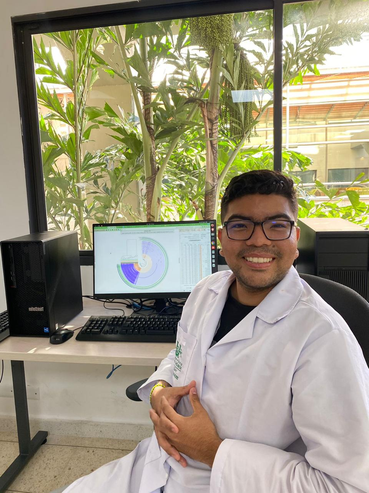
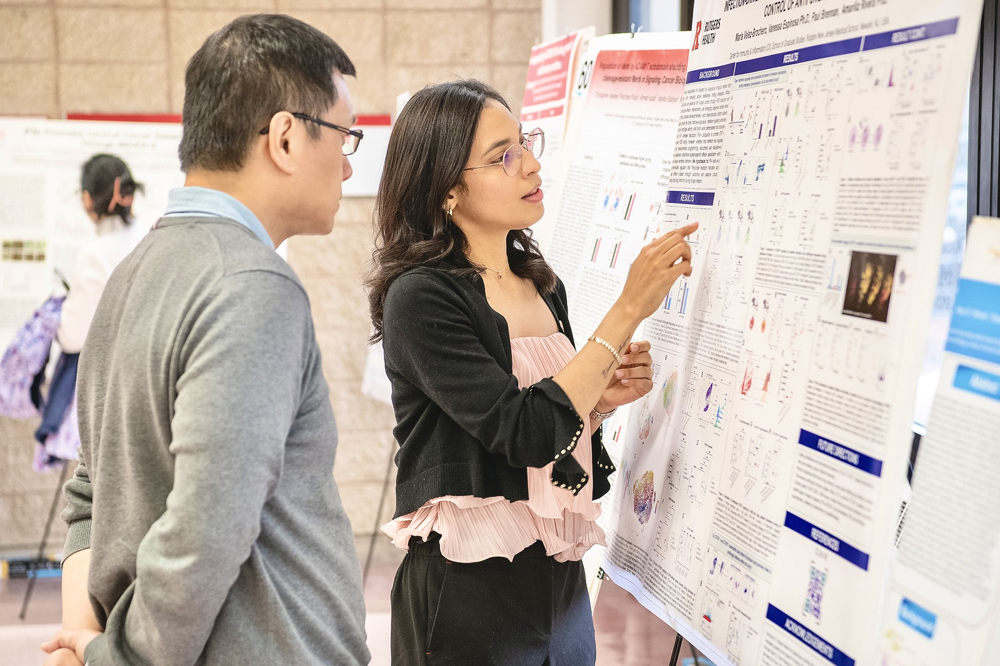
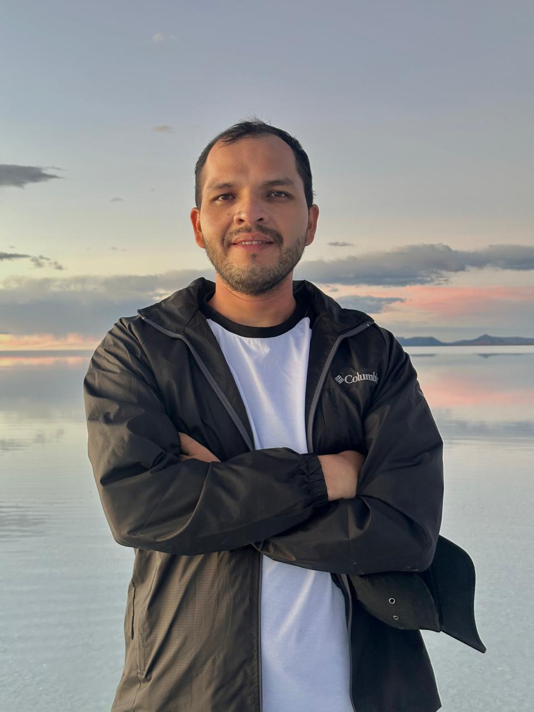
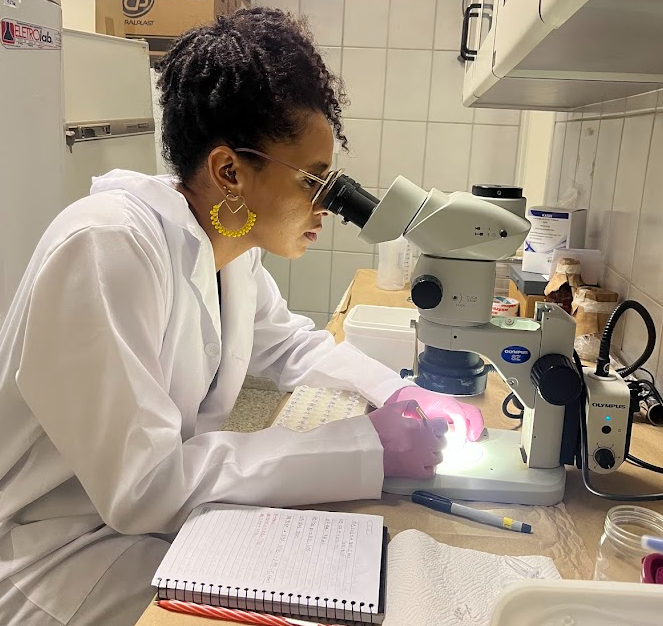
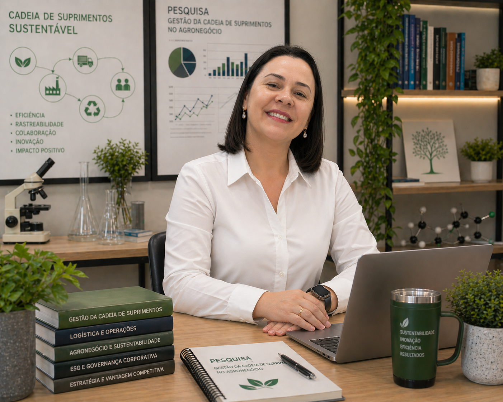
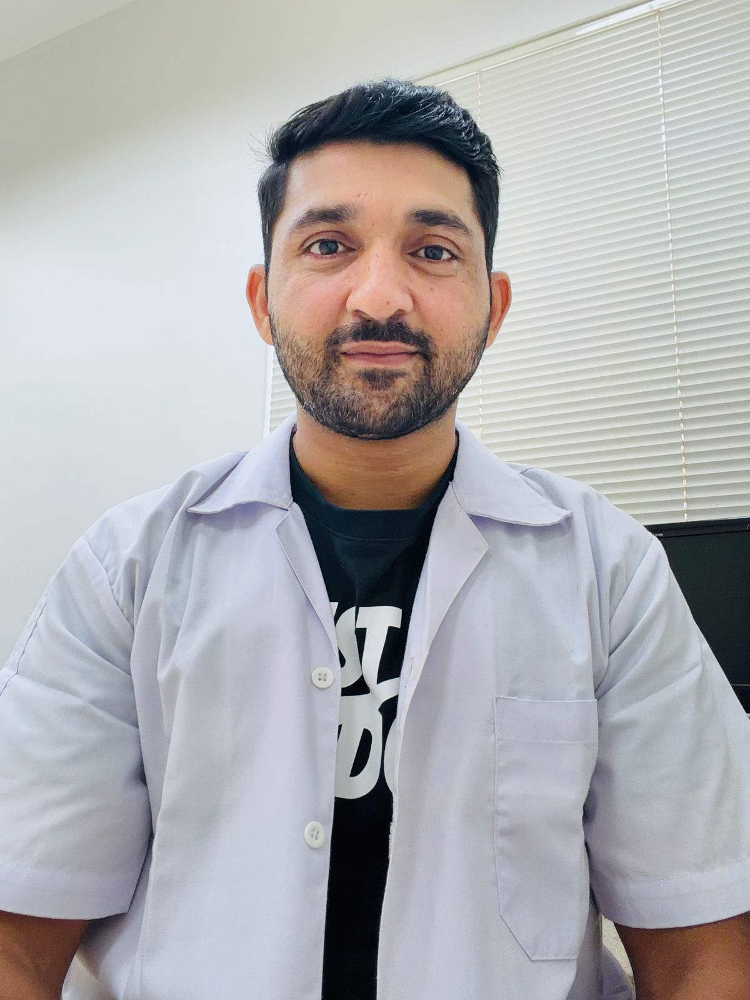
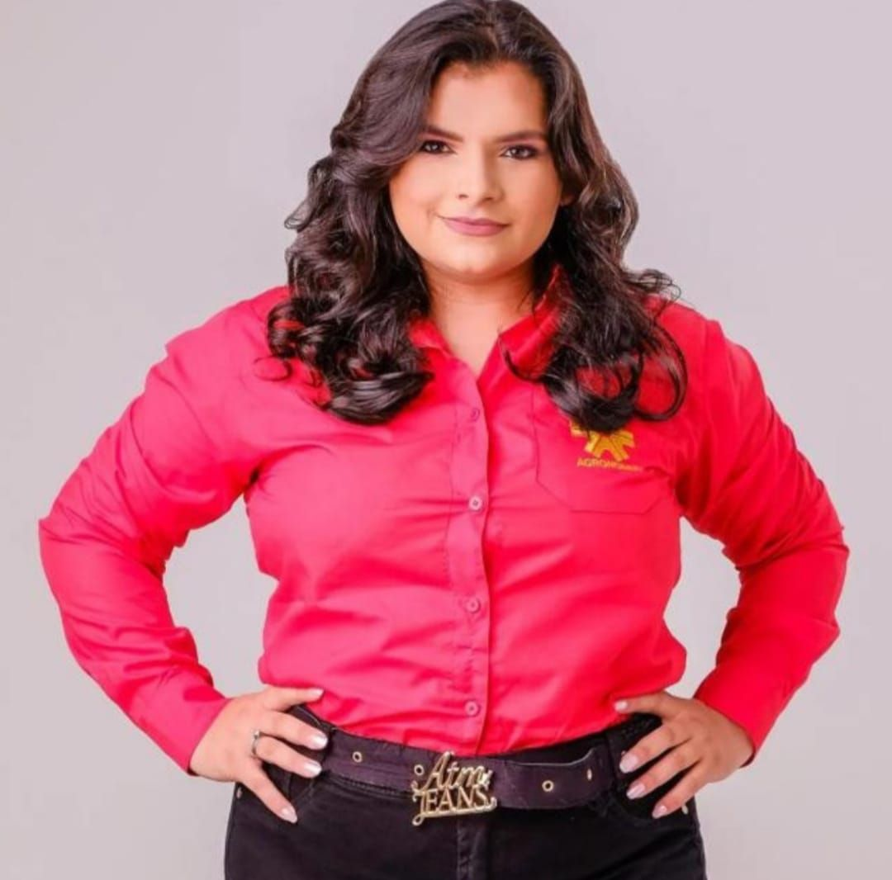
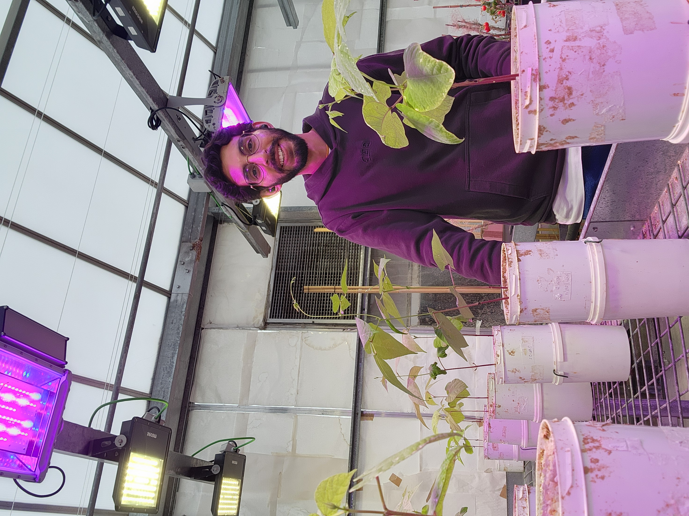

Our Team

Abraham David Guerra Ospino
CEO & Founder
🇨🇴🇧🇷🇮🇹
Specialist in bioinformatics and microbial biotechnology who integrates high-throughput sequencing data with ecological modeling. Currently conducting advanced research on metagenomics and metatranscriptomics through an international exchange at the University of Padua (UNIPD), Italy, while completing a Master’s at UNESP, Brazil. Dedicated to establishing decentralized networks for global scientific collaboration.
Nilo Corrêa de Mello Júnior Ricardo
Lead Researcher🇧🇷
Agronomist and PhD candidate in Plant Production at UNESP specializing in Data Science and postharvest physiology. His expertise lies in using Near-Infrared (NIR) spectroscopy and machine learning algorithms to predict fruit quality and optimize harvest timing, bridging the gap between agriculture and advanced computational analytics.

Maria Velez-Brochero
Lead Researcher🇨🇴🇺🇸
Ph.D. candidate in Biomedical Sciences at Rutgers Medical School specializing in translational immunology. Her work investigates innate immune regulation during fungal and viral lung infections using single-cell transcriptomics and CRISPR systems. ASM Future Leaders Fellow (2026) and founder of BiotecScience platform.

Samanta Gabriela Medeiros Carvalho
Lead Researcher🇧🇷
PhD in Genetics and Plant Breeding with extensive expertise in molecular biology, genomics, and plant-pathogen interactions. Specialist in standardizing bioinformatics pipelines for DNA sequencing and phylogenetic analysis, she integrates morphoanatomical studies with advanced genomic tools to decode plant resilience.
Associated Researchers

Lizeth Fernanda Banguero Micolta
Associate Researcher🇨🇴🇧🇷
Biologist from the University of Caldas and active member of GEBIOME. Her work focuses on the intersection of molecular biology and epidemiology within the One Health framework...

Natally S. Vidal Figueroa
Associate Researcher🇵🇷🇨🇴
Biologist and Master’s student at UPRM whose research integrates bioremediation and nanotechnology. She applies biochemical approaches to microbiological analysis...

Jaqueline Cristina Galiardo
Associate Researcher🇧🇷
Doctoral candidate in Food and Nutrition at UNESP investigating personalized probiotic therapy and microbiota modulation. Her research at the LPP explores metabolic models...
Dana Páez Niño
Associate Researcher🇨🇴
Microbiologist specialized in biotechnology and DNA extraction protocols via iron nanoparticles. Her research focuses on nutrient-solubilizing bacteria associated with Utricularia gibba...

Elisângela Pulcini Jacob
Associate Researcher🇧🇷
Master's candidate in Business Administration at UNESP/FCAV and specialist in Supply Chain Management within Agribusiness. She integrates multidisciplinary strategies in marketing...

Shahzad Shoukat
Associate Researcher🇵🇰🇮🇩🇰🇷🇧🇷🇺🇸
Doctoral researcher at CAUNESP with an international trajectory across Pakistan, Indonesia, United States, South Korea and Brazil. He specializes in aquatic microbiology...
Susana Ospina
Associate Researcher🇨🇴
Microbiologist with a solid academic background and experience in applied research in the agricultural and biotechnology sectors...

Jamiles Carvalho Gonçalves de Souza Henrique
Associate Researcher🇧🇷
Agricultural Engineer and Doctoral Researcher at the Federal University of Paraíba (UFPB), specializing in post-harvest biochemistry and physiology.

Luis Angel Chicoma Rojas
Associate Researcher🇵🇪🇧🇷🇪🇸
Ph.D. candidate in Genetics and Plant Breeding at UNESP and CBGP collaborator. He integrates bioinformatics with molecular bioprospecting to identify microbial traits that promote plant growth and stress tolerance, aiming to enhance productivity and sustainability in global agricultural systems.